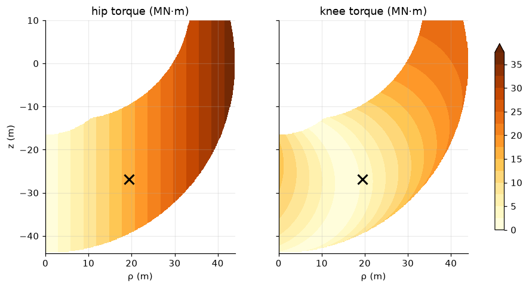
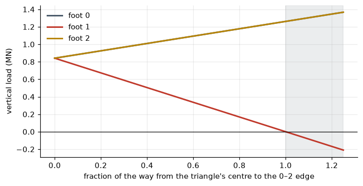

Statics and the Jacobian: What the Motors Must Hold
Velocity kinematics, virtual work, τ = Jᵀf, force ellipsoids and sharing a 257-tonne load between three feet (part 3 of 4)
A worked introduction to the manipulator Jacobian and robot statics: velocity kinematics, singularities, manipulability and force ellipsoids, the virtual-work law τ = Jᵀf, gravity torques, and distributing a body’s weight between three feet, all checked against MuJoCo contact forces.
explainer
robotics
kinematics
python
Author
Paul Milne
Published
October 25, 2026
Third of four explainers behind The Martian Tripod. Part 1 found where the foot is; part 2 found the joint angles that put it there. Both were pure geometry. This part brings in force. The machine weighs 257 tonnes and stands on three point feet, so how hard must each motor push?
One matrix answers that: the Jacobian, the derivative of forward kinematics. It maps joint velocities to foot velocity, and its transpose maps foot forces back to joint torques. This post derives it for the tripod’s leg, checks it against MuJoCo, and then uses it to explain the spider-like stance. It ends by sharing the weight between the feet, which sets up part 4.
\(J\) is the Jacobian. For the tripod’s leg it is \(3\times3\): three joints in, three components of foot velocity out. Column \(j\) is the foot’s velocity when joint \(j\) alone turns at 1 rad/s.
Part 1 gave the foot in the leg’s own plane, horizontal reach \(\rho\) and height \(z\) relative to the hip, in terms of the elevation angles \(\phi_1 = -q_h\) and \(\phi_2 = -(q_h + q_k)\):
The yaw \(\psi\) turns that plane about the vertical, so with \(\theta = a_i + \psi\) (mount azimuth plus yaw) the foot is at \(\big(\rho\cos\theta,\ \rho\sin\theta,\ z\big)\) relative to the hip. Differentiating term by term:
The first column is the yaw: it moves the foot round a horizontal circle of radius \(\rho\). The other two act within the leg’s plane. MuJoCo computes Jacobians for any point on any body (mj_jac, mj_jacSite). Here they are side by side for all three legs in the standing pose.
leg 0: max |analytic - MuJoCo| = 3.6e-15 m/rad
leg 1: max |analytic - MuJoCo| = 1.2e-04 m/rad
leg 2: max |analytic - MuJoCo| = 4.9e-06 m/rad
leg 0, standing (rows x, y, z; columns yaw, hip, knee), m/rad:
[[ -0. -26.9 -27.79 ]
[ 19.4 -0. -0. ]
[ 0. -19.4 -3.425]]
The analytic Jacobian matches MuJoCo’s. Leg 0 agrees to machine precision; the others differ only by the six-figure rounding of their mount angles noted in part 1. For legs 1 and 2 the same numbers appear, rotated by 120° and 240°.
Singularities
The Jacobian is invertible except where its determinant vanishes. Expanding along the bottom row and simplifying gives a compact result:
\[
\det J = \rho\,L_1L_2\sin q_k .
\]
There are three ways to lose a degree of freedom.
\(\rho = 0\): the foot is directly below the yaw axis, and turning the yaw does nothing. This is the yaw singularity from part 2.
\(q_k = 0\): the leg is straight. Hip and knee then both move the foot perpendicular to the leg, and nothing can move it along the leg. This is the edge of reach.
\(q_k = \pi\): the leg is folded back on itself. The joint limits rule this out.
Push unit-speed joint motions, \(\|\dot{\mathbf q}\| = 1\), through \(J\) and the foot velocities fill an ellipsoid. Its axes are the singular vectors of \(J\), and its semi-axis lengths are the singular values. This is the manipulability ellipsoid. Where it is long the foot moves fast; where it is thin the leg is close to a singularity in that direction.
Forces behave in the opposite way. As derived below, a foot force \(\mathbf f\) needs joint torques \(\boldsymbol\tau = J^\top\mathbf f\). The foot forces that unit joint torques can produce, \(\|\boldsymbol\tau\| = 1\), form the force ellipsoid\(\mathbf f^\top(JJ^\top)\mathbf f = 1\). It has the same axes, with reciprocal lengths. A direction in which the leg moves fast is one in which it pushes weakly, and vice versa: the same trade as a bicycle’s gears.
Figure 1: Velocity (blue) and force (red) ellipses for the hip–knee part of the leg at several foot positions in the leg plane, hip at the origin. Each is drawn to its own scale; only shape and orientation matter. Near full reach (right) the velocity ellipse collapses along the leg and the force ellipse stretches along it: a straight leg can hold a huge load along its length but cannot move that way at all. The thick leg is the standing pose.
Virtual work: τ = Jᵀf
Now the key result. Suppose the ground pushes on the foot with force \(\mathbf f\), and the leg is in equilibrium, held there by joint torques \(\boldsymbol\tau\). Imagine a tiny joint displacement \(\delta\mathbf q\). The foot moves \(\delta\mathbf p = J\,\delta\mathbf q\). In equilibrium the total work done in any such virtual displacement is zero. The work the motors do equals the work done against the ground:
\[
\boldsymbol\tau^\top\delta\mathbf q = \mathbf f^\top\delta\mathbf p = \mathbf f^\top J\,\delta\mathbf q \quad\text{for every } \delta\mathbf q
\qquad\Longrightarrow\qquad
\boldsymbol\tau = J^\top\mathbf f .
\]
This is the principle of virtual work. It needs no free-body diagrams, no reaction forces at the joints and no geometry beyond the Jacobian already computed. Each row of \(J^\top\mathbf f\) is a dot product: joint \(j\)’s torque is the foot force projected onto the direction joint \(j\) moves the foot. For a hinge, \(\mathbf J_j = \boldsymbol\omega_j\times(\mathbf p - \mathbf r_j)\), so
\[
\tau_j = \mathbf f\cdot\big(\boldsymbol\omega_j\times(\mathbf p - \mathbf r_j)\big) = \boldsymbol\omega_j\cdot\big((\mathbf p - \mathbf r_j)\times\mathbf f\big),
\]
which is just the moment of the foot force about joint \(j\)’s axis. That is the familiar lever law, recovered from the Jacobian.
Adding the legs’ own weight
The legs themselves are heavy: each weighs 28 t. Gravity on each part does work too, so each part contributes its own \(J^\top\) term, using the Jacobian of its centre of mass:
The sign follows the equations of motion, \(M\ddot{\mathbf q} + \mathbf c(\mathbf q, \dot{\mathbf q}) = \boldsymbol\tau + J^\top\mathbf f\). With everything at rest, the motor torque must cancel the gravity term \(\mathbf g(\mathbf q)\) and the ground force. MuJoCo calls the term \(\mathbf c\) (gravity plus Coriolis and centrifugal terms, which vanish at rest) qfrc_bias. The tripod’s balance controller computes exactly this: bias - J.T @ force for every planted leg.
The check: torques from measured contact forces
The strongest test is to let MuJoCo settle the standing machine and then measure the contact forces from its contact solver. Those are numbers the controller never sees directly. Then predict the joint torques from them with \(\boldsymbol\tau = \mathbf g(\mathbf q) - J^\top\mathbf f\), and compare with what the motors are actually commanding.
Show code
d = fresh()ctl = BodyController(P, model)goal, _ = ctl.com_state(d)while d.time <6.0: ctl(d, [0, 1, 2], goal, np.zeros(3), rotz(0.0)); mujoco.mj_step(model, d)mujoco.mj_forward(model, d)floor = model.geom("floor").idcontact = {}for k inrange(d.ncon): c = d.contact[k]if floor notin (c.geom1, c.geom2):continue f6 = np.zeros(6); mujoco.mj_contactForce(model, d, k, f6) F = c.frame.reshape(3, 3).T @ f6[:3] # contact frame -> worldif c.geom2 == floor: # make it the force *on the foot* F =-F other = c.geom2 if c.geom1 == floor else c.geom1 contact[model.geom(other).name] = (F, c.pos.copy())print("measured ground forces on the feet (MN):")for i inrange(3): F, pos = contact[f"foot{i}"]print(f" foot {i}: {F/1e6} at ({pos[0]:6.2f}, {pos[1]:6.2f})")print(f" total vertical {sum(contact[f'foot{i}'][0][2] for i inrange(3))/1e6:.4f} MN; weight {W/1e6:.4f} MN\n")print("joint torques (MN m) predicted g(q) - J^T f commanded by the controller")for i inrange(3): dof = model.joint(f"leg{i}_yaw").dofadr[0] F, pos = contact[f"foot{i}"] mujoco.mj_jac(model, d, jacp, None, pos, model.body(f"leg{i}_shin").id) tau = d.qfrc_bias[dof:dof +3] - jacp[:, dof:dof +3].T @ Fprint(f" leg {i} (yaw, hip, knee): {tau/1e6}{d.ctrl[3*i:3*i +3]/1e6}")
measured ground forces on the feet (MN):
foot 0: [-0. 0. 0.823] at ( 22.00, -0.00)
foot 1: [0. 0. 0.85] at (-11.00, 19.05)
foot 2: [ 0. -0. 0.85] at (-11.00, -19.05)
total vertical 2.5232 MN; weight 2.5232 MN
joint torques (MN m) predicted g(q) - J^T f commanded by the controller
leg 0 (yaw, hip, knee): [-0. 12.672 2.583] [-0. 12.672 2.583]
leg 1 (yaw, hip, knee): [ 0. 13.201 2.676] [ 0. 13.201 2.676]
leg 2 (yaw, hip, knee): [-0. 13.202 2.676] [-0. 13.202 2.676]
Prediction and simulation agree to every printed digit. The feet carry nearly pure vertical loads that add up to the machine’s weight. Foot 0 carries a little less than the others because the centre of mass sits about 0.24 m behind the hood’s centre, pulled back by the carrier basket.
Why the spider stance
For a vertical foot load \(F_z\) the virtual-work formula gives a striking result. The yaw column has no vertical component, so the yaw torque is zero. The hip and knee torques come from the bottom row of \(J\):
\[
\tau_h = -F_z\,\partial_h z = F_z\,\rho, \qquad \tau_k = -F_z\,\partial_k z = F_z\,L_2\cos\phi_2 .
\]
Here \(\rho\) is the foot’s horizontal distance from the hip, and \(L_2\cos\phi_2\) is its horizontal distance from the knee. A joint’s torque from a vertical load depends only on how far the foot is from it horizontally. The leg’s shape doesn’t matter, nor does its height or the angle of the thigh. The legs’ own weight modifies this. It hangs on the inboard side of the foot and partly offsets the load, which is why the hip’s 16.3 MN·m from the load alone becomes the 13.2 MN·m measured above.
This is why a heavy walker stands like a daddy long-legs (harvestman). The hip must sit 19.4 m inboard of the foot, because the feet must be spread wide for stability, so the hip carries a large torque whatever happens. But the knee can be put almost directly above the foot. Then the knee torque is nearly zero, and the shin becomes a column in compression.
Show code
Fz = W/3R_, Z_ = np.meshgrid(np.linspace(0, 44, 300), np.linspace(-44, 10, 300))TH = np.full(R_.shape, np.nan); TK = np.full(R_.shape, np.nan)for idx in np.ndindex(R_.shape): rho, z = R_[idx], Z_[idx] c = (rho*rho + z*z - L1*L1 - L2*L2)/(2*L1*L2)ifabs(c) >1:continue qh, qk = ik2(rho, z)ifnot (-1.2<= qh <=1.4and-0.3<= qk <=2.6):continue tau =-J2(qh, qk).T @ np.array([0.0, Fz]) TH[idx], TK[idx] =abs(tau[0]), abs(tau[1])fig, axs = plt.subplots(1, 2, figsize=(10.5, 4.6), sharey=True)for ax, Tm, name in ((axs[0], TH, "hip"), (axs[1], TK, "knee")): cs = ax.contourf(R_, Z_, Tm/1e6, levels=np.arange(0, 40, 2.5), cmap="YlOrBr", extend="max") ax.plot(*foot0, "x", color="k", ms=10, mew=2) ax.set_aspect("equal"); ax.set_title(f"{name} torque (MN·m)"); ax.set_xlabel("ρ (m)")axs[0].set_ylabel("z (m)")fig.colorbar(cs, ax=axs, shrink=0.8)plt.show()qh, qk = ik2(*foot0)tau0 =-J2(qh, qk).T @ np.array([0.0, Fz])print(f"standing, load only (no leg weight): hip {abs(tau0[0])/1e6:.2f} MN m = Fz x {rho0:.1f} m;"f" knee {abs(tau0[1])/1e6:.2f} MN m = Fz x {abs(tau0[1])/Fz:.2f} m")

Figure 2: Joint torques needed to carry one third of the machine’s weight, for every foot position in the leg plane (knee-up solutions within joint limits), hip at the origin. Left: hip. Right: knee. The cross is the standing foot. Hip torque depends only on horizontal reach; knee torque is smallest when the shin is vertical.
standing, load only (no leg weight): hip 16.32 MN m = Fz x 19.4 m; knee 2.88 MN m = Fz x 3.42 m
The hip torque map is a set of vertical bands: it depends only on \(\rho\). The knee map has a cool valley along the line where the knee sits above the foot. The standing pose sits near that valley, with the foot only 3.4 m horizontally from the knee. Statically the 40 MN·m motors could hold a third of the machine’s weight with the foot anywhere out to \(40/0.84 \approx 47\) m from the hip, which is beyond reach. So standing is never torque-limited. The limit comes when walking. The motors have only about three times the standing hip torque in hand, and the main post found that the swing legs saturate once the gait is pushed much past 5–6 mph.
Sharing the weight between three feet
So far each leg had its own foot force. Where do those come from? The machine as a whole must be in equilibrium. The ground forces \(\mathbf f_1, \mathbf f_2, \mathbf f_3\) acting at the feet \(\mathbf p_i\) must balance the weight acting at the centre of mass \(\mathbf c\):
where \(\mathbf g_\uparrow = (0, 0, g)\). Stack the nine force components into one vector and these six equations become linear:
\[
G\,\mathbf f = \mathbf w, \qquad
G = \begin{pmatrix} I & I & I \\ [\mathbf p_1 - \mathbf c]_\times & [\mathbf p_2 - \mathbf c]_\times & [\mathbf p_3 - \mathbf c]_\times\end{pmatrix}\in\mathbb R^{6\times9},
\qquad \mathbf w = \begin{pmatrix} m\mathbf g_\uparrow\\ \mathbf 0\end{pmatrix}.
\]
\(G\) is the grasp matrix, a name borrowed from robot hands, where fingers share the job of holding an object. Here the “object” is the machine itself and the “fingers” are the ground contacts. Nine unknowns and six equations leave a three-dimensional null space. Those are the internal forces: combinations of foot forces that cancel exactly, adding no net force or moment. For three point feet they are pairs of feet pushing against each other, squeezing or stretching along each edge of the triangle.
Show code
com = d.subtree_com[HOOD].copy()feet = [contact[f"foot{i}"][1] for i inrange(3)]G = np.zeros((6, 9))for i, p inenumerate(feet): G[:3, 3*i:3*i +3] = np.eye(3); G[3:, 3*i:3*i +3] = skew(p - com)w = np.array([0, 0, W, 0, 0, 0])print(f"rank G = {np.linalg.matrix_rank(G)}, null space dimension = {9- np.linalg.matrix_rank(G)}")f_min = np.linalg.pinv(G) @ w # minimum-norm solutionprint("minimum-norm foot forces (MN):\n", f_min.reshape(3, 3)/1e6)N = null_space(G)# rotate the null-space basis to make it readable: one squeeze per edgeedges = []for a, b in ((0, 1), (1, 2), (2, 0)): v = np.zeros(9); u = (feet[b] - feet[a])/np.linalg.norm(feet[b] - feet[a]) v[3*a:3*a +3] =-u; v[3*b:3*b +3] = u # feet a and b pushed apart along their edge edges.append(v)E = np.column_stack(edges)print(f"G times each edge-squeeze = {np.abs(G @ E).max():.1e} (they are internal forces)")print(f"edge-squeezes span the null space: rank [N E] = {np.linalg.matrix_rank(np.hstack([N, E]))}")# vertical loads are the barycentric coordinates of the centre of massA = np.vstack([np.array(feet)[:, :2].T, np.ones(3)])lam = np.linalg.solve(A, [com[0], com[1], 1.0])print("vertical share of weight: measured", np.round([contact[f'foot{i}'][0][2]/W for i inrange(3)], 4)," barycentric coords of COM", lam.round(4))
rank G = 6, null space dimension = 3
minimum-norm foot forces (MN):
[[ 0. -0. 0.823]
[-0. 0. 0.85 ]
[-0. 0. 0.85 ]]
G times each edge-squeeze = 3.8e-15 (they are internal forces)
edge-squeezes span the null space: rank [N E] = 3
vertical share of weight: measured [0.326 0.337 0.337] barycentric coords of COM [0.326 0.337 0.337]
Four results come out of this.
The minimum-norm solution is the one MuJoCo found. It is purely vertical, with no internal squeeze. The project’s controller solves the same least-squares problem (BodyController.distribute), with two extra conditions explained below.
The edge squeezes span the null space. Any amount of push-apart or pull-together along the three edges can be added without disturbing equilibrium. A real controller uses this freedom to keep the feet away from slipping, by pushing them inward so friction is not needed, or to reduce the hip torques.
Vertical loads are barycentric coordinates. For vertical forces, moment balance says the weighted average of the foot positions, weighted by each foot’s share of the load, must equal the centre of mass’s position over the ground. Those weights are exactly the barycentric coordinates of the centre of mass in the foot triangle. MuJoCo’s measured shares match them to four figures.
The ground can push but not pull. A foot’s vertical force must be positive, \(f_{i,z} \ge 0\). Its sideways force must stay inside the friction cone, \(\sqrt{f_{i,x}^2 + f_{i,y}^2} \le \mu f_{i,z}\). These inequalities turn the least-squares problem into a constrained one. The controller handles them with a small active-set loop: any foot that would have to pull is clamped to a light push, and the rest are re-solved.
Unloading a foot
The barycentric picture explains how to take a step. Move the centre of mass towards the edge between two feet, and the third foot’s barycentric coordinate, and so its load, falls linearly to zero. Once it is unloaded it can be lifted without the machine noticing. Go any further and it would have to pull: the machine tips.
Show code
F2 = np.array(feet)[:, :2]mid =0.5*(F2[0] + F2[2])s = np.linspace(0, 1.25, 200)loads = []for si in s: cxy = (1- si)*F2.mean(axis=0) + si*mid loads.append(np.linalg.solve(A, [cxy[0], cxy[1], 1.0])*W/1e6)loads = np.array(loads)fig, ax = plt.subplots(figsize=(7.5, 3.6))for i, col inzip(range(3), (STEEL, RED, BRASS)): ax.plot(s, loads[:, i], color=col, lw=2, label=f"foot {i}")ax.axvspan(1, s[-1], color=GREY, alpha=0.15); ax.axhline(0, color="k", lw=0.8)ax.set_xlabel("fraction of the way from the triangle's centre to the 0–2 edge")ax.set_ylabel("vertical load (MN)"); ax.legend(frameon=False); plt.show()

Figure 3: Foot loads as the centre of mass is carried in a straight line from the centre of the support triangle towards the edge between feet 0 and 2 (and beyond it), from the barycentric formula. Foot 1’s load reaches zero exactly at the edge. Beyond that, keeping all three feet down would need foot 1 to pull on the ground (shaded).
On two feet, the machine is a hinge
Lift a foot and \(G\) shrinks to \(6\times6\), with just two feet. You might expect six equations and six unknowns to have a unique solution. But one combination is impossible: no pair of forces applied at two points can make a moment about the line through those points, since every such force either passes through the line or crosses it. \(G\) loses rank.
Show code
# moments about a point on the hinge line (foot 0), so the missing direction comes out cleanlyG2 = np.zeros((6, 6))for k, i inenumerate((0, 2)): G2[:3, 3*k:3*k +3] = np.eye(3); G2[3:, 3*k:3*k +3] = skew(feet[i] - feet[0])U, S, Vt = np.linalg.svd(G2)axis = (feet[2] - feet[0])/np.linalg.norm(feet[2] - feet[0])print(f"rank of the two-foot grasp matrix: {np.linalg.matrix_rank(G2)} of 6 (smallest singular value {S[-1]:.1e})")print("unreachable wrench direction (force; moment):", U[:, -1].round(3))print("direction of the line through feet 0 and 2: ", axis.round(3))
rank of the two-foot grasp matrix: 5 of 6 (smallest singular value 1.6e-21)
unreachable wrench direction (force; moment): [-0. -0. 0. 0.866 0.5 0. ]
direction of the line through feet 0 and 2: [-0.866 -0.5 -0. ]
The missing direction has no force part and a moment part along the line through the two feet: a pure moment about that line (the sign of a singular vector is arbitrary). Nothing the legs do can resist a tip about that line. Wherever the centre of mass is relative to it, the machine rotates about it freely, like a door on its hinges. The controller acknowledges this explicitly: on two feet it projects the hinge component out of the moment it asks for (the hinge argument of distribute) instead of fighting it.
So a walking tripod is never in static equilibrium while a foot is in the air. It is always falling sideways about the hinge, and the next footfall has to catch it. Planning that fall is the subject of the final part.
Summary
The Jacobian \(J = \partial f/\partial\mathbf q\) maps joint velocities to foot velocity. For the tripod’s leg, \(\det J = \rho\,L_1L_2\sin q_k\). It is singular with the foot under the hip, with the leg straight, or with the leg folded.
Virtual work gives \(\boldsymbol\tau = J^\top\mathbf f\). Velocity and force are dual: the leg moves fast in the directions where it pushes weakly.
With gravity, \(\boldsymbol\tau = \mathbf g(\mathbf q) - J^\top\mathbf f\). This predicts MuJoCo’s standing torques exactly, from contact forces measured in the simulation.
A vertical load costs torque in proportion to horizontal distance. So the knee sits above the foot, and the hip does the work.
Balance is a \(6\times9\) linear system with a 3-D null space of internal forces. Vertical loads are the barycentric coordinates of the centre of mass. On two feet the system loses a rank: the hinge.
K. M. Lynch and F. C. Park, Modern Robotics (2017), chapter 5 (velocity kinematics and statics) and chapter 12 (grasping and the grasp matrix).
R. M. Murray, Z. Li and S. S. Sastry, A Mathematical Introduction to Robotic Manipulation (CRC, 1994), chapter 5, for internal forces and friction cones.
T. Yoshikawa, “Manipulability of robotic mechanisms”, International Journal of Robotics Research 4(2), 1985. The origin of the manipulability ellipsoid.